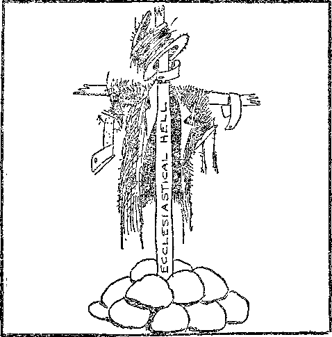

MY- TAiS Roar roogA- SOME th in MUST BE .DONE

Sib'
A JOURNAL OF FACT HOPE AND1COURAGE
PUBLIC HOUSl. .
UNIFORMED BOOTLEGGERS
IS ITALY NEAR RUIN?
WOLVES OF SOCIETY
WORLD PEACE
JOB RESTORED
radio lecture by Judge Rutherford
EVERY OTHER WE D N E S D A Y 5c a copy - $1.00 a year - Canada & Foreign $1.50
Volume XI - No. 272 February 19, 193 0
’®-'===========:r ' =8C^BS=:- ■: ' ......=—=—---- W
Labor and Economics
Loss in Railroad Employment .............. 326
The Wolves of Society ................. 335
Social and Educational
Public Houses—Past and Present ............ 323
Swindlers in Europe Too .......
Getting an Education in Massachusetts ....
Political—Domestic and Foreign
Our Uniformed Bootleggers ....
Italy near Economic Ruin ..........
Agriculture and Husbandry
Protecting Bruit Trees by Netting
A Pew More Facts About Milk .............. 339
Science and Invention
Robots in Modern Chemistry . •*
Do We Live in a Closed Universe? .
Home and Health
Peacock’s Sacrifice Unnecessary
Travel and Miscellany
Religion and Philosophy
Pope Blesses New York ...........
A Colporteur in New Orleans Harbor ...
Job Restored .................. .
The Carmelite Fathers . ............. .
The Children’s Own Radio Story ............. 351
Published every other Wednesday at 117 Adams Street, Brooklyn, N. Y., U. S. A., by WOODWORTH, KNORR & MARTIN
Copartners and Proprietors Address: lit Adams Street, Brooklyn, N. V., V. S. A, CLAYTON J. WOODWORTH .. Editor ROBUST J. MARTIN .. Business Manager NATHAN H. KNOBB.. Secretary and Treasurer
Five Cents a Copy—$1.00 A Yeah Make Remittances to THE GOLDEN ACE
Notice to Subscribers: We do not, as a rule, send an acknowledgment of a renewal or a new subscription. A renewal blank (carrying notice of expiration) is sent with the journal one month before the subscription expires. Change of address, when requested, may be expected to appear on address label within one month. •
Foheicn OrncES
British . . . . » , ....... 34 Craven Terrace, London, W. 2, England Canadian ........... 40 Irwin Avenue, Toronto 5, Ontario, Canada, Australasian . „ 7 Beresford Rd., StrathfleJd, Sydney, N. S. W., Australia South Africa ............6 Lelie Street, Cape Town, South Africa
Entered as second-class matter at Brooklyn, N, Y., under the Act of March 3, 1879.'
Volume XI Brooklyn, N. Y., Wednesday, February 19, 1930 Number 272
IT CAN be set 'down as certain that the inn between Canaan and Egypt, where Joseph’s brethren found their money in their sacks on the return journey, was not much of a hotel as compared with the caravansary of today. It may have been the same inn wffiere Moses stopped on his return to Egypt after forty years in Midian.
We know that in Jeremiah’s day there were in the wilderness lodging places for wayfaring men, for Jeremiah himself wished to get away from his own people and find rest in such a hermit-like abode; and he would have found it dull enough, lodging place” is about all it could be called.
The caravansaries or khans of eastern countries today are about as they were in Bible times. They are merely stalls like meetinghouse sheds, arranged on four sides of a square. It was probably in such a stall or "manger” that earth’s Anointed King was born, at Bethlehem.
The Parable of the Good Samaritan shows that each inn or caravansary had a caretaker who, for a small sum, would render any necessary service. There was such a caretaker in charge of the inn in the upper room in which our Lord and His disciples partook of their last meal together.
The ancient Romans had in Italy what they designated as Osteria. These were without host, cook, waiters or beds. All they provided was shelter. Guests had to bring their own bedding and food and do their own cooking. The first public inn in America was licensed by the General Court of Massachusetts in 1634.
China has had hotels, and good ones, for so long that the memory of man runneth not to the contrary. At a native inn in China a guest is shown to his room at once without any preliminaries in the office. The beds are hard, but after one night of discomfort the body becomes
adapted to them and one thinks nothing more of it.
Famous Old Hotels
The old George Tavern, London, famous in the days of Charles Dickens, is still in service. It is reached by turning up a narrow lane out of Borough High Street. The guest is still shown to his bedroom by the light of a tallow candle. The tavern contains many relics of Dickens, and pictures of London as it was in his day. All the bedrooms are furnished with old-fashioned four-poster bedsteads.
The House of Seven Gables, in Salem, once a famous hotel, and later a private home, is now entertaining the public once again, and accommodating overnight guests with board and rooms.
The Old Tavern at Arrow Rock, Missouri, provided entertainment for the pioneers who went to California seventy-five years ago over the old Santa Fe trail. Today it is caring for automobilists who run to and fro across the continent, covering as great a mileage in a day as their ancestors did in a month.
The Waldorf Astoria, once New York’s most sumptuous and elegant hotel, has been pulled down to make room for a huge office building. Old patrons paid high prices for souvenirs. One man came and asked the privilege of praying in the room where his mother had died.
The Hotel Biltmore, New York, has a chapel, supposed to be for Catholics, Protestants and Jews alike, but if representatives of those three faiths can get along in one room it is a surprise to us. In most places it is as much as they can do to get along together in the same city.
There is now a hotel in Death Valley, California, where so many caravans have been swallowed up in this arid spot, 274 feet below sea level. The hotel is W’ell named "Furnace Creek Inn”. It is now easily reached by automobile and is a popular resort.
323 '
The most inaccessible hotel in the world is the Jungfraujoch, high up on the Jungfrau, in the Bernese Alps, Switzerland, 11,480 feet above the sea. It is built of stone and iron, securely fastened to the mountain. Ordinarily it is reached by the funicular railway from above Interlaken, but there are weeks in the winter when it is cut off from the rest of the world, except as the skilled employees go to and from it with skis. It is open the year around.
The Hotels of Today
We are not intimating that some of the hotels just named are not hotels of today. They are, very much so. But the large cities are building more and more hotels all the time, and it is not too much to say that some of these are not improvements on the old ones.
They have more bath rooms, and have telephone and elevator service, but they do not have the large and quiet rooms, and do not set as good a table as some of the hotels of fifty years ago. It is impossible to have a homelike air in a noisy place, and the modern hotel is a bedlam.
The concrete walls make good sounding boards for ringing bells, clattering feet, slamming doors and radio music. Telephone conversations, quarrels and business conferences, poker parties, gramophone shrieks, and the snores of guests that have finally weathered the storm and arrived in slumberland, are sometimes accentuated by noises from the theatre beneath. Street cars and automobiles finish the job.
The kitchen arrangements are about as nearly perfect as can be desired. A great volume of business is handled with ease. A hotel in Washington booked nine hundred reservations for one day and was able to care for them all. Large hotels are becoming much alike the world over. Some of the newest ones are making a strong appeal to women who have specialized in the arts of the home, and are using feminine talents for the positions of tea-room manager and cafeteria manager. They are recognized as being by nature better fitted for these positions than are men.
New York has an automobile hotel twenty-four stories high. The building is architecturally attractive, is absolutely fireproof, noiseless and clean. It has mechanical parkers, with elevator service to all floors. Cars can be locked at the elevator, as they are not operated on their own power from that moment.
Hotel Losses and Gains
The hotel business is either "a big make or a big break”. If a hotel is rightly situated, rightly built, rightly managed, and is popular, it will succeed. If it is short in any of these particulars, it is liable to be a failure, sooner or later.
The guest is always right. Even if he steals towels and bedspreads, he is wanted back as a guest. Even if he claims damages for shirts that have been mended, remended, and even the remendings remended, his patronage is still desired. Even when caught stealing souvenirs, he is still in favor as a guest.
The expensive hotel has a trained inspector who checks the contents of each vacated room. His trained eye notes instantly if anything is missing; and if it is gone, it is charged to the bill of the person leaving, at triple its cost. The patron may flush, but he pays without protest.
One-fifth of the dishes and glassware of a hotel are broken annually, but every broken piece is saved and sold. Tomato cans, sardine tins, newspapers, grease, garbage, everything is disposed of in the way that wrill bring the hotel the greatest returns.
A new hotel is made popular by giving free room and board to celebrities who can be persuaded to live in it. The lights are turned on at night in every room. Employees are kept in motion. Pages shout the name of important personages in the lobby and dining rooms, even w’hen the persons thus called are known to be on the other side of the world.
Budapest had a hotel that offered a court banquet at what was evidently less than cost. It transpired that court etiquette compelled members of Emperor Francis Joseph’s retinue to practically go hungry, as they were not supposed to eat when he had finished. The food^.; practically untouched, was sold by palace employees to the innkeeper, who thus placed before his guests food that had once been served in the presence of the emperor. This is not the only hotelkeeper that has served food a second time. It is a risky business, but it is done.
The modern hotel has its own silver repair plant, its silver-plating department, laundry for handling thousands of pieces a day for itself and for the guests, mending and pressing departments, and kitchen machinery in profusion. There are machines for washing dishes, whipping cream, paring potatoes and vegetables, beating eggs, etc.
The Tipping System
A tip is a bribe, or it is blackmail, depending upon how the matter is viewed. Nothing good can be said of it. It presupposes that the employer does not pay a living wage, and this is often true. Indeed, the employer holds wages down because of the tips which he knows or suspects that his employees will receive. In justice, every guest is entitled to every courtesy, tip or no tip.
Tipping came to 'America from the snoboc-racy of Europe, the nobility. In European hotels where 10 percent has been added to the bill of the guest in lieu of tips, it is found that tips are still paid and still expected. London has a tipless hotel. The servants are well paid. The penalty for accepting a tip is dismissal. The hotel is always filled, and reservations must be made weeks in advance.
The proof that Americans loathe the tipping system is found in the rush to cafeterias and automats. Tip seekers have multiplied in New York until tips are expected for mailing letters, delivering telegrams, ice or groceries, carrying one up in the elevator, etc.
In New York city a prominent artist failed to indulge in as much tipping as those who served him thought proper, and three waiters entered his studio and ruined a $200,000 painting. Nice condition of affairs, isn’t it? The Alice Foote MacDougall Coffee Shops expect or did expect their waitresses to pay for their jobs, instead of receiving pay, coldly calculating that the public could be mulcted of a certain sum in tips, and that the concern should receive a part of them.
The London Daily Mail tells of a Londoner who, on returning from a fashionable resort in the north of England, discovered that neither he nor his wife had left the usual tips with the hotel staff. He thereupon sent funds to cover the tips. On the same day his wife received a letter on the hotel’s stationery, from the head waiter, reading as follows: “Your husband left without leaving gratuities for any of the staff, which is a most disgraceful thing for a man of his standing. I feel it my duty to forward your name to my club and association, so that every hotel in England, Ireland, Scotland and Wales will know your name and also the ungenerous way you treated the above hotel staff.” Would it make you feel fine to get a letter like that? It wouldn’t.
Here is one on the other side of the tipping question. An old rancher, styled “Old Man Dexter”, went back and forth from western Nebraska to Chicago, selling his cattle, and always stopped in the depot restaurant at Council Bluffs, Iowa, for his meals. When he offered tips to Elizabeth Hill, waitress, she always refused them, saying that she was paid for her work and that all guests were entitled to courteous service without paying an additional fee.
The other day Old Man Dexter sent her a check for $10,000 and a deed for one thousand acres of the best grazing lands in Nebraska, and wrote her the following letter: “You are a real American and the only person who ever refused my tips. In the hills of Devonshire I have a wife and daughter buried. In memory of them and with my best wishes for the future, I beg you to accept these remembrances.” Well! It would make you feel fine to get a letter like that; now, wouldn’t it ?
To Drug or Not to Drug
IF YOU will kindly print in the next issue of The Golden Age the experience I am going to relate to you, it may be of some help to someone else.
My wife was in bed very sick with high fever, earache, sore throat and aching bones, all at the same time. I called two medical doctors every day for four days. The fourth day she got much worse. She was unable to lift her head off the pillow.
Then she called my attention to the article you had published in The Golden 'Age. It was
By I. A. Haddad
then that I called the chiropractor, W. G. Wright. The results she got from the treatment he gave her seemed a miracle. He cured her that very day, and the next day she was able to go to his office for more treatment to regain the strength which she had lost by taking the drugs which the medical doctors had given her.
It cost me about twenty dollars for the medical doctors, and she received no benefit; whereas it cost me only six dollars to cure her completely through chiropractic treatment.
Loss in Railroad Employment ’ _
IN THE nine years from 1920 to 1929 the number of employees on American railroads was reduced by 366,000, and the total payroll for all employees was reduced by $178,000,000. The smaller force of workers in 1929 handled 22,383,000,000 more gross ton-miles of freight.
Employment Bureaus in Paris ....... _
PARIS has twenty-five free employment bureaus, as against four in New York city. A thousand men a day are placed by the Paris bureaus. Moreover, the private employment bureaus, of which there are so many in New York, are few in Paris and closely regulated.
No Unemployment in France
THOUGH Great Britain, Germany, and the United States are all suffering because of unemployment, yet it is claimed that there is none at all in France. In Paris the number of persons who are believers in and teachers of the occult is said to be growing by leaps and bounds.
Twenty-Million-Dollar Wage Increase '
Y RAISING the minimum wages of his workers from $6.00 to $7.00 a day Henry Ford has added twenty million dollars to the annual wages paid in his American and Canadian plants. Workers receiving $7.00 or more a day at the time of the raise get increases of five-percent on their previous rates of pay.
General Electric Profits
GENERAL ELECTRIC profits for the year 1929 were sixty-eight million dollars. Pittsburgh Plate Glass profits were only twelve million dollars, still that is not so bad when you come to think of the Wall Street crash as no doubt having interfered somewhat. The talking movies made a profit of $17,000,000.
rA and P Chain Stores
HpHE A&P chain stores, first and largest J- of the chains, were founded seventy years ago by George H. Hartford. The food sales of the system now total a billion dollars a year. A&P claims to take only 2jc profit on $1 sales.
Eats His Weight in Meat
HpHE average man weighs about 154 pounds, and, oddly enough, eats just about that many pounds of meat each year. Of this amount 74 pounds is pork, 51 pounds is beef, 7 pounds veal, 6 pounds lamb and mutton, and 15 pounds lard.
Insurrection Against Fascism .
HUHE insurrection against the tyrannies of
Fascism which broke out in Sulmona, Piezza, and other towns in southern Italy, has been smothered in blood, and a fresh crop of unfortunates will now be headed for Italy’s horrible penal islands. A new Fascist law enables Italy to try and even sentence to death an Italian living in another country.
Emigration from Russia
MIGRATION from Russia persists on the part of all who can get away, and disposes pretty well of the idea that Sovietism is the cure-all of human woes. The Soviet campaigns against religious liberty have led to a large body of Mennonites’ leaving the country recently-
Airplane Travel in Persia
ERSIANS who can afford it are doing their travel by air. The rates are no more than for automobile travel, there are no incidental expenses en route, the time is next to nothing, and there are no dangers from bandits along the road. The last is the controlling factor of the situation.
Clergy Back on the Job
Oil Sands near Edmonton
rpHE Mexican clergy are back on the job, and J- once more we are treated to the spectacle of men and women crawling for miles on their hands and knees to the church of “Our Lady of Guadalupe”. Peter told the man who was down on his hands and knees to get up. Who is this that tells him to get down?
CANADA has found valuable oil sands near
Edmonton. By ordinary cream separator methods each ton of sand yields a barrel of hydrocarbons containing 13 gallons of gasoline, 6 gallons of lubricating oil, and 130 pounds of asphalt. It costs fifty cents a barrel to extract the hydrocarbons.
GOLDEN AGE
Business 'Whistling Cheerfully
HE president’s conferences with business leaders seem to be bearing fruit. Posters
The Electric Knife
UEGERY by the use of high frequency electric waves now bids fair to replace the older
are in profusion telling that business is good and must be kept good, and that nothing can put America down and keep it down. And when one comes to think of it there is little use getting down in the mouth. Jonah came out all right.
League Run by Flapdoodlers
loyd Geobge, in a recent speech in parliament, is reported as having said: “Without disarmament, Avar in my judgment is inevitable. The League of Nations has been going on for ten years. There are meetings: there are eloquent speeches delivered in favor of peace, disarmament and arbitration. But the League of Nations is in damger of failure by being run by flapdoodlers.”
Better Conditions in Marion
RIENDS of the poor workers in southern cotton mills are rejoiced to know that out of all the troubles at Marion, North Carolina, the mills have been forced or shamed into bettering conditions somewhat. Hours of ■work have been cut to 55 a week, a five-percent increase in wages has been granted, and plumbing and sewerage will be installed. The six men who were slain did not die in vain.
Lottery Riot in Spain '
IN LINARES, Spain, demons informed a wo. man that the grand prize in a certain lottery was a certain number held by a certain shopkeeper. She disclosed the news, and the man’s place of business was stormed. The man thereupon held another lottery to auction off his lucky ticket and. made a large profit. It transpired that the information given by the demons was correct.
A Collision in Mid-Air
ONE of the dangers of flying airplanes in South America is suggested by what happened on a recent flight between Argentina and Chile. While in a pass in the Andes, seventeen thousand feet above sea level, a giant condor attacked the plane, which swerved in time to merely give it a glancing blow. The wing which hit the bird was badly dented by the blow. The bird fell.
forms. The increase of the spark frequency to 50,000 allows incisions to be made as easily as with a knife. The new surgery is bloodless. Major operations in the new surgery have been performed in Vienna.
At the Age of Sixty-Ewe
T THE age of sixty-five, fifty-four out of every one hundred American men who started their careers at the age of twenty-live in good physical condition, are then dependent upon relatives or charity, thirty-six are dead, five are still in the harness, four are well to do, and one is rich, well-fed and happy, and derives great contentment from telling the rest of mankind what a splendid civilization we have.
Robots in Modern Chemistry
rpHE photo-electric cell has made possible the J- use of robots in chemistry. The electric eye of these mechanical chemists is said to be 165 times as sensitive to differences in colors as any human eye, and it is explained by the inventors that the use of these robots will save much of a chemist’s time. Incidentally, the chemical robot will not be on the pay roll and will not have any wife or children to look after.
Fireproofing German Forests
THE College of Forestry, at Tharandt, Germany, has inaugurated a system of fireproofing growing trees. Holes are bored in the trunk of the tree near its base, and into these is poured a compound of silicon, fluorine and other chemicals, which is carried by the sap into all parts of the tree. The tree thereafter, and the lumber subsequently made from it, is in a measure fireproof.
The Development of Marquis Wheat
THE development of Marquis wheat, patiently evolved by a series of studies and experiments stretching over a quarter of a century, has given Canada twenty million acres of new wheat-land and added two billion dollars a year to the wealth of the world. The Marquis ripens early, clings tenaciously to the stem, grows to an adequate height, and produces good bread of standard consistency.
Skip to Shore Telephone Service
SHIP to shore telephone service at $7 a minute for conversations has been inaugurated and works perfectly. On the first day the service was installed to the Leviathan, then some 900 miles out at sea, there were thirteen calls to and from New York city, Boston, Rochester, Atlantic City, Cincinnati and Indianapolis. The connections are said to have been made in about a minute each, a most remarkable thing.
Railroad Speed a Hundred Years Ago
IN THE British Quarterly Review, published in 1825, the wise old editor said: ‘cWe trust that Parliament will, in all railways it may sanction, limit the speed to eight or nine miles an hour, which, we entirely agree with Mr. Sylvester, is as great as can be ventured on with safety.” Please do not laugh at this item if you still believe in the eternal torture theory; for if you believe in it you are in the same mental condition that he was.
The Outlook for Peace
ON THE day the Kellogg Peace Pact was signed there were three million men under arms in Europe. As to the United States, seventy-two cents out of every dollar expended by the national government goes for wars that are past or wars that we hope to get into in the future. Congressman Patman, of Arkansas, seeks a constitutional amendment that would take the profit out of future wars by enabling the drafting of capital the same as man power in event of war. Every capitalist in the United States would fight such a proposition to the bitter end.
Margaret Webb and Martha Graber
Margaret Webb, a Canadian-born Quaker, resident twelve years at Richmond, Indiana, was unable to gain citizenship in the U. S. A., because unwilling, even in defense of life or family, to take human life. Her lawyer abandoned her case in court when she said that, since the Kellogg Pact, it would not now be necessary for it to defend itself by force of arms. Martha Graber is a nurse. She said she would be willing to lay down her life for her new country, but would not be willing to go out and kill enemies with a gun. The court denied her admission as a citizen, in Ohio. If Jesus of Nazareth were at Ellis Island, He would have to stay out.
What American Machinery Does
A MERICAN machinery enables each American workman to turn out twice as much wrnrk as is possible in Belgium, two and one-half times as much as in Germany, three times as much as in France, four times as much as in Holland, five times as much as in Poland, eight times as much as in Japan, eleven times as much as in Italy, twelve times as much as in Russia, twenty-four times as much as in British India, and thirty times as much as in China.
The Gastonia Ministers
AT GASTONIA, North Carolina, it was found impossible to get a minister to preach a burial sermon for murdered strikers. Every minister was afraid of his job. Perhaps, however, it was just as well. The people at the funeral were spared the listening to a lot of bunk that was exploded by the Bible Students long ago. It is only a little while now till these ministers will all be buying overalls and dinner cans and winding new alarm clocks.
Great Earthquakes Under Oceans
GREAT earthquakes have recently been reported as having taken place both under the Atlantic and under the Pacific ocean. Off the shores of Alaska seven volcanoes are in eruption; and off the shores of Nantucket the bottom of the Atlantic seems to have caved in, as soundings in several places failed to reach bottom. Ten of the twenty-one transatlantic cables were broken by the earthquake shocks, and in some instances cables between Europe and America were sent around the world on account of the congestion thus caused.
Getting Rid of Husbands
PIETY women in two little villages in Hungary conceived the brilliant idea that a good way to get rich quickly would be to poison their husbands and take over their property. The plan worked very well, as far as getting rid of the hubbies was concerned, but now the whole fifty are trying to explain to the court why they did it and are having a hard time doing it. One of the women who confessed to bumping off hubby by the arsenic route objected to being charged with murder, on the ground that her hubby had died without suffering. However, she was greatly mistaken. Arsenical poisoning is one of the most terrible of deaths.
Chrysler and Manhattan Buildings
HE Chrysler Building, 68 stories, with the top of its flagpole 1,030 feet above the pavement, is the world’s tallest building, by thirty feet. Its next tallest building in New York is the Bank of Manhattan, 71 stories, with its flagpole 925 feet above the street. The Chrysler flagpole, 185 feet high, was built within an elevator shaft by a force of workmen sworn to strict secrecy and was hoisted to its high position after construction.
Toronto’s Gambling Losses
WRITER in the Toronto Daily Star claims that between thirty and forty thousand
December’s Terrible Storm
HE terrible storm of December will be long remembered, for a storm. It seemed to cover the entire northern hemisphere. Extremely cold weather prevailed as far south as Cuba and Italy, while in more northern climes there were great numbers frozen to death, and the coast of western Europe was strewn with the wreckage of sixty-nine large ships. It is said that never before were so many ships in distress at one time.
Bad Faith in Palestine .
HE three authors of the Palestine mandate are now demanding a complete and thor
residents of that city were seriously affected by their gambling losses on the New York stock exchange when the recent crash came. Another claims that one-third of the city were caught and are demanding that something be done to curb this most gigantic system of international gambling. A Detroit advertising agency estimates that about seven million Americans were involved in the 'Wall Street losses.
Conditions at Muscle Shoals
FTER ten years of oratory at Washington, the Alabama Power Company is still buy
ough examination of Britain’s conduct of that mandate, claiming that the wmrk to which Britain set her hand is not proceeding satisfactorily; and an Austrian citizen is suing Britain in the International Bligh Court of The Hague for the loss of $300,000 invested in the silk business in Palestine, on the ground that the mandate has been so mishandled that success of the enterprise is impossible.
Texas Peonage Law Unconstitutional
SENSIBLE Texas judge has declared unconstitutional the peonage law of that
ing current from the government-owned plant at Muscle Shoals at one-fifth of one cent a kilowatt hour and is selling it in nearby cities for ten cents a kilowatt hour, which is just fifty times its cost. Only one-fourth of the actual and one-eighth of the potential power of the dam is being used. The Power Trust is as happy as the kitten that swallowed the canary, and meantime the Pacific branch of it still keeps Mooney in jail.
Holy Grail Redivwus
GERMAN author and playwright, perceiving how easily the people are fooled by
anything that smacks of religion, bought an Austrian castle, fitted it up elaborately with electric arrangements, announced himself as an incarnation of the spirit of Adruschin, Knight of the Holy Grail, and had persuaded 120 educated and intelligent sauerkraut eaters to part with $100,000, before the police invaded the premises and carried the ambitious spirit of Adruschin off to court to make due amends to his dupes and to the public.
state which made it unlawful for any person between sunset and sunrise to move laborers or tenants of property without the consent of the owner of the premises. Judge Lattimore held, sensibly, that the governor of the state, the members of the legislature, and the court itself, are laborers, earning their bread by the sweat of their brows, and that he did not see. justice in a law which would forbid him to go where he pleased at any time he pleased.
Forty Million Starving Chinese
A CHINESE army raids a community, strips it of every material possession, leaves its women and children to die, and takes the menfolk along as soldiers. A month after he leaves home the poor coolie thus drafted is hopelessly lost. He does not know where he came from or how to get back, so he becomes a permanent bandit and soldier, which, in China, are one and the same thing. There are forty million starving Chinese due to this wretched condition of things. The crops are ample, or would have been if the farmers could have been let alone.
Events in Canada By Our Canadian Correspondent
THE rapidity with which the Peace River country is opening up, and the large influx of settlers, is causing much interest in Canada as a whole. Recently Premier Brownlee of Alberta, accompanied by President Wallace of the University of Alberta and others, completed a 3,000-mile tour of the Peace and Slave River countries and still farther northward to the shores of Great Slave Lake.
The. premier and the university president saw a great country and are convinced that, within their own lifetimes, it will have a population of a million and an agricultural production exceeding that of all western Canada today.
This is a spacious forecast. John Imrie, editor of the Edmonton Journal, has an article in the Financial News about the Peace River country as seen and reported upon by the Alberta premier’s party. He describes the agricultural region as having a length equal to that from Windsor to Quebec city and containing 47,000,000 acres of good land, and he points out that Ontario, using less than 25,000,000 acres for all purposes, has an annual agricultural production of $500,000,000.
The Peace River itself is described as the loveliest of northern waters, varying in width from a quarter of a mile at Hudson’s Hope to more than a mile at Vermilion Chutes and at many points beyond. It has tree-covered islands and for most of its course its banks are 800 feet in height, and from these the panoramic view is comparable with that at Quebec city. One is bound to be impressed by the fact that all who tour the Peace River country return filled with the same unbounded enthusiasm as to the immediate future awaiting it.
First Wheat via Hudson Bay
One ton of Manitoba wheat, grading No. 1 Northern, has left Churchill on the Hudson’s Bay steamer “Ungava” for European ports. This is the first shipment of prairie grain sent by the Hudson Bay route overseas. It remains only for the “Ungava” to land its cargo safely, and the start of a new chapter in Canadian commerce will have been written. The shipment is insignificant from a commercial point of view, but it is a landmark in the history of the Canadian west. For a generation the prairie provinces have fought against eastern opposition, for a railway line to their nearest seacoast.
Nearly thirty years of agitation were required to get the first sod turned, and nearly twenty more to get the railway finished. Today it is all but ready for business, and the first grain......_
exported by Churchill is on its way to Great Britain. An event awaited for half a century — has at last happened. It is an occasion for selfcongratulation in these western provinces.
The wheat on the “Ungava” will get to Liverpool twm or three days quicker, and with 1,200 .......
miles less traveling, than any of the billions of bushels of grain sent from the West to Britain.....
since agriculture began here. That ton is the first ..........
instalment of a movement of wheat which will, . in time, exceed in volume the movement through either Montreal or Vancouver. It stands to reason that every possible boatload will be .......
shipped by the route which saves the farmer _ _ ten cents a bushel in freight charges.
It is • significant that the shipper of the first ton is the Hudson’s Bay Company. That company has been doing business by the Bay route . .., since 1670, and it knows all there is to know about the route from Churchill to Europe, and ... with that background is preparing to take a .. hand in carrying an enormous volume of grain from the new seaport. Those who are familiar with the Hudson Bay route from experience ....
have no doubt of its usefulness. It is by those
who know nothing about it that the country has ■ been entertained for twenty years with stories of bottomless muskegs, Arctic temperatures._______
wolves, seals, polar bears and tempests.
The Thunderer, of Toronto, contains this in-
Pope Pius XI—“Billy” King! (premier) Now ' listen, “Billy.” These Bible Students must be chased / from the air. Their message must be stifled, for if J it reaches the public they will lose their superstitious awe of us. ” , ... .....
Priests, Parsons, Press—“A splendid idea! A splendid idea! ”
Big Business—“Exactly! That’s the real‘dope’,” “Billy” King—“I heartily agree.”
His Sooty Highness, The Devil—“So do I.”
Financial Bulwarks of Civilization
Hush says it is a lie, and we agree:
press broke out in a rash trying to explain that this
discount on our money was caused by the wheat situation and that the farmers and the wheat pool in the West were to blame.
This is another Chartered Bank falsehood.
The wheat situation had nothing to do with it. During the last sixty days the Canadian banks poured hundreds of millions of dollars into the call money market in New York. This is the cause.
Our Uniformed Bootleggers By William J. McNulty (Reprinted from TNT, Muscatine, Iowa)
T F THE wholesale corruption of the police higher-ups and the lower-downs continues, it will be a problem to locate an honest limb of the law. The limbs will all be rotten.
Prohibition, with its wide-open opportunity for selling protection to the poison peddlers, has been responsible for scores of thousands of policemen of the ranks and officers deliberately violating the solemn oath to enforce the laws. Lowly patrolmen and lofty superiors are tarred with the same stick. They fraternize with the purveyors of poison and wax wealthy on the blood money.
In the average city, large and small, there is a comprehensive system of weekly collection. The raid on the man who kicks in, is merely a formality. He is notified in advance by telephone or messenger to be on his guard. A bottle or two will be taken as evidence if it is the leg-ger’s turn to take a fine. For there is a regular license plan in some centers.
The legger who refuses or is delinquent in kicking in, is jumped on suddenly. If lie has all his hooch in a safe “hide,” he is framed. A policeman brings in a bottle of the liquid dynamite and pretends he finds it in the dive.
Very often, he of the crusading propensities turns out to be so crooked he could sleep on his corkscrew if it were enlarged, without being out of alignment. The crusading is to frighten the poison peddlers into kicking in, and to throw a smoke screen over the crusader’s corruption.
By way of apt illustration, let us cite the case of Caleb J. Brinton, once described as “the most honest policeman in Philadelphia.” And who fastened that label on Brinton, the assistant superintendent of Philadelphia’s police department? None other than Major General Smedley D. Butler of the Marines, when Butler was director of public safety for Philadelphia.
Millions in Graft
In the recent investigation of the Philadelphia police, sponsored by District Attorney Monahan, it was revealed that Brinton was unable to explain satisfactorily just where he received $31,400, which he had banked. The grand jury held Brinton to be unfit to hold any position under the municipal government. He had deposited more money in banks than he received in his annual salary, as deputy head of the Philadelphia police. The sum in question was recognized as a comparatively small percentage of what was actually involved, but, at that, the jury decided it was “'either all or substantially all dishonestly acquired.”
Within four years, John J. Carlin, deposed inspector of the Philadelphia police, banked $193,533. William J. McFadden, another inspector, deposited $102,828 in the same period. John Stuckert, a third inspector, had a total of $45,000 deposited in four years. It was disclosed that 18 captains had placed to their credits in the local and nearby banks, each year for four years, more than the full amounts of their yearly salaries. In all, the debauched police executives numbering 21 out of a total of 50, had deposited approximately $900,000 in banks within four years. The grand jury were convinced there were others, but it was difficult to unearth some of the accounts. Assumed names had been used in many instances.
What Law Protection Means
Charles W. Schoenlber, a former captain of the Philadelphia police, was fined $10,000 and sent to prison for four years. Another dismissed captain, William O. Knoell, was fined the same sum and sentenced to three years. Three detectives were handed prison sentences and fines, ranging from $750 to $3,000. Matthew Patterson, politician, a partner of the police executives, wTas fined $5,000 and sentenced to five years.
Justice Edwin O. Lewis, in discussing the revelations, said, - “The amazingly sordid recital should make it clear to citizens of Philadelphia why bootleggers, gangsters and gunmen had been able to operate with impunity.” The grand jury recommended the dismissal of 21 police heads, because of “unexplained personal wealth which we believe was either all or substantially all dishonestly acquired.” And the dismissals by the civil service trial board have followed. Practically all pleaded not guilty but refused to testify.
An investigation of the police of Chicago revealed that conditions could not be much worse. Bootleggers had corrupted the police department from top to bottom. It is estimated that protection money to the extent of a million dollars a year has been paid out in recent years by hooch handlers to crooked policemen, with the state’s attorney detectives as well as the city police involved in the corruption.
Police chiefs, one after the other, have given up, in disgust, their attempts to lead the Chicago police out of the maze of bribery and banditry. Feuds have developed between police factions due to double crossing tactics of the various alliances between the police and the peddlers of poison.
Violence and Murder r
Don R. Mellett, editor and publisher of a Canton (Ohio) daily, was murdered without being given a chance for his life, because he disclosed the tie-up in Canton between the police and bootleggers.
Mellett found corruption rampant in the Canton police department. From top to bottom, the department was rotten. So exasperated were the heads of the police because of the disclosures made by Mellett, they decided to “get” the fearless editor.
The police usually have their friends in the underworld take their enemies for rides. In this instance, they allowed their hatred to subordinate caution. One of the police detectives, Floyd Streitenberger, was directly concerned "with the slaying of this young man of whom the Canton police made a martyr. The Canton police tried diligently to do nothing in solving the problem or even making an attempt to pave the way for the solution. The detective and the chief of police, one H. A. Lengel, were involved, and convicted.
The bootlegging dives of Canton had been wide open. All that was necessary to assure their continued operation was to pay the protection money regularly and promptly.
Use Licensing System
In Chelsea, Massachusetts, the relations between police and poison peddlers have been notorious for many years. When an investigation was made by the federal authorities in response ~
to an avalanche of complaints from citizens of......
Chelsea, it was revealed that what was practically a license system was in vogue. The makers, ‘
sellers and distributors of the imitation liquor---------------
were within the pale when they continued to .....
pay for protection. Once they neglected a pay- ’ ment, there was a raid that would-prove discs- ’ trous for the delinquent. - -
The chief inspector and a captain of the Chelsea police were charged with conspiracy to violate the eighteenth amendment. They were convicted and sentenced to prison terms.
Another member of the force found it pays .....—
to share with affairs in the department. He had ..........
been retaining all he collected, with the result that a raid was made on one of the policeman’s........
payors, and the bootlegger protested he was paid up to date for protection. The policeman was dismissed. The alliance between the poison purveyors of Chelsea and the local police has . _ demoralized law enforcement to such an extent that criminals run amuck. The bootleggers have widened their scope to include a new racket. This with the cooperation of the local police and crooked lawyers. Fake accidents are staged to defraud the insurance companies. The result is that, due to the volume of these bogus accidents, the insurance commissioner of Massachusetts ordered an increase of almost 100 per cent in the rate for compulsory liability insurance for the metropolitan Boston area which includes Chelsea. The Chelsea police have been inactive while the insurance firms have been mulcted of hundreds of thousands of dollars, and the car owners have been elected to pay the — ultimate costs to the insurance companies, with ......
the rate on small cars $47 and on large cars $60, yearly, for the single item of compulsory in-^ surance for physical damages in insurance against injuries to others.
In the neighboring city of Revere, Massachusetts, where the bootleggers have also been racketing in fake accidents, with Revere a close second in volume of fraudulent claims on the insurance concerns, the mayor found it necessary to reorganize the police department and fire the chief. Conditions reached such a vicious state that the bootleggers were openly boasting of being privileged to do as they pleased. With the chief to the discard went several of his chief assistants.
-- An investigation, introduced by District Attorney Gardner of Pittsburgh, has revealed illicit relations between the bootlegging fraterni-L ty and the Pittsburgh police. The inquiry resulted in 261 indictments being returned by the grand jury, there being repeated evidence of - collusion between the police and poison ped-=T dlers. Police executives were shown as initiating a system of regular collection, with threats of raids and prosecution as swords continually held over the heads of the loggers.
’ Higher-ups Involved
Giving the notorious Berger bootlegging gang of Chicago a poison peddling monopoly in ' Herrin, Illinois, resulted in John Stamm, chief A of police, being indicted for conspiracy. It was . revealed that reprisals had followed extension of monopoly privileges to the Berger bandits. Thousands of dollars were collected monthly from the leggers who used Herrin as manufac-. taring base for supplying Chicago with the wood alcohol beverages. Leggers who were not affiliated with the Bergers were also denied the ... . right to market their products in Herrin. A number of the murders, for which the Herrin section has been notorious for some years, have been directly traceable to the local police. Cicero is another of the sub-Chicago munici-~ palities notorious for the extent to which the police departments have been debauched in the quest for protection by bootleggers. At Herrin, together with the chief of police, the state’s attorney, Arlie 0. Boswell, was also indicted, and the local mayor was also given due recognition by tlie bar.
At Salisbury, Massachusetts, where is located one of the leading beaches along the Atlantic seaboard, Chief of Police Harold S. Congdon, was convicted of jconspiracy, and with two selectmen went to prison for two years. Congdon had been promising immunity for bootleggers who kicked in. A feud that followed the refusal of several to continue paying the ever increasing fees exacted as tribute, resulted in the charges against Congdon and his associates in crime. Large quantities of hooch had been smuggled ashore at Salisbury from booze vessels, for distribution all over America.
Rich and Privileged Class
District Attorney Foley, of Boston, investigated the Boston police department. He found the head of the liquor squad owning a palatial home, employing two servants, possessing an expensive car, and living like a man of wealth. Incidentally, the policeman was the owner of a fast running horse, which had been the property for a year of one of the most notorious bootleggers of Boston. The bootlegger said the policeman bought the horse from him.
There was found to be a regularly organized system of the higher-ups in the police for levying tribute on the poison peddlers, particularly in certain districts. The police heads refused to cooperate with the district attorney in the inquiry. As a gesture to the spirit of the investigation, the police commissioner ordered an intensive shake-up in his department, the most general ever known. One captain who had headed a district for 28 years was shifted to a far removed district. In another district, the incoming captain sponsored a number of prosecutions and bona fide raids, whereas, the outgoing captain had been passive, with the district a stamping ground for manufacturers and peddlers of the poisonous fluids.
Heads of the state police of Massachusetts were revealed as making nocturnal visits to the liquor storehouse of the department, and departing with the confiscated liquor.
Wholesale Corruption
George Remus, whose escapades have been responsible for thousands of paragraphs in the newspapers in recent years, let it be known he bought his way everywhere he operated on the flaming trail. When he went into the booze racket from lawyering in Cincinnati, he solicited the alliance of police heads. His plotting had ramifications all over America. He paid protection money in many cities and towns, and claims he was yet to meet a policeman that was not open to bribery. He lost control when he refused to heed the demands of the police for higher fees. They destroyed his bootlegging prestige and influence by genuine raids on his shipments and hooch havens.
The police of the office of the district attorney of Middlesex County, Massachusetts, were used for many years in collecting protection money from the bootleggers. William J. Corcoran, exdistrict attorney, was convicted of corruption.
He was in league with the bootleggers. He is to pay police tribute, and there is nothing crude
now serving a term in the Massachusetts state prison at Boston. When an investigation of the prison department was recently made, a still was found in CorcoraMs cell. He had corrupted the guards, and was distributing the liquor among me prisoners and guards. Had it not been for the murder* of a guard by a notorious convict, Corcoran would still have his still.
Nathan A. Tufts, Corcoran’s successor as district attorney, was revealed as an accomplice of bootleg dive operators. He was fired out of office, and several of his police heads were indicted for bribery. The next Middlesex district attorney to fall into public odium was Arthur K. Reading, who graduated from district attorney to attorney general of Massachusetts. He had posed as a purist to cloak his illegitimate operations, and, after being exposed as a bribetaker, tried to brazen out the charges. He was forced to resign and was impeached by the legislature.
Exposed as in collusion with Tufts and Corcoran in shaking down the bootleggers, was the district attorney of the adjoining county of Suffolk (Boston), Joseph C. Pelletier, who was ousted from office in consequence of the revelations. The disgrace resulted in his death. The police of the Suffolk district attorney’s office had been corrupted.
. ■ , , ' ' t
Widespread Collusion
Arnold Rothstein, the notorious king of New York’s underworld, was the head of a big booze and narcotic syndicate. It is estimated that he paid thousands of dollars weekly as protection money to members of the New York police. If one of his henchmen was arrested, all he had to do was to call up one of his police pals, and the prisoner would quickly be free. There is not a poison peddler in New York who is not forced about the bagging system there.
An investigation was made of why Groton, Massachusetts, was a favorite base for never-----------
ending cases of bribery and crime. It was whiskey. As a result, the chief of police was eon-victed of conspiracy and given a jail term. He had been collecting regularly from the local purveyors of the spurious liquor, and made a clean breast of it all.
Same Everywhere ■
The same conditions produce the same effects’ everywhere. In Nova Scotia, Canada,, they have a prohibition enforcement system like ours, with exactly the same results.
For 33 years, David A. Morrison was police........
chief of Pictou, Nova Scotia. Recently he was in court for hi-jacking 1,690 bottles of counterfeit whiskey, which was being transportcdrraftF“= Pictou in a motor vehicle.
Col. C. E. Bent, chief of the highway police of Nova Scotia, “resigned” recently
es had been introduced against his dfipiWfienW ■ of graft and inefficiency. What resulted v/as a general exposure involving a half dozen police-.....
men in drunken brawls. And this force had been in existence only two years.
That conditions were rotten in Glace Bay, Nova Scotia, was recently admitted by the mayor of the town. Bribery has been rampant and the police have been thoroughly demoralized. The mayor confessed: “The situation has gotten entirely out of my hands.” In the neighboring city of Sidney, Nova Scotia, conditions were so bad it was necessary to get rid of the chief of police.
After an investigation was made of the police department of North Sidney, Nova Scotia, Chief Clark was dismissed. Evidence was produced that he had been collecting protection money of the bootleggers.
ALONG BEACH (Calif.) man reports excellent results accruing from covering fruit trees with mosquito netting, fitted over the trees bag-shaped, with a puckering string and a bandage covered with castor oil and resin at the bottom. The cost of netting and bandages was only ninety cents a tree, and he thinks this
plan of fighting the fruit fly could be made a success in Florida. However, an eastern man made the same experiment with a cherry tree, with the result that he got only ninety cherries on the entire tree. He found that unless the bees could get at the blossoms and pollenize them the results were almost nothing.
Francesco Nitti, former premier of Italy, declares that Italy is near economic ruin and that the end can not be far off. Since Fascism came into control there have been sixty thousand business failures, and not only does Italy now have more bankruptcies than any other country in the world, but the proportion is from five to twenty times those of other countries of Europe and America.
The falling off in trade by sea has caused the ...... stock of the largest navigation company to fall from 1000 lire, payable in gold, to 500 lire, payable in paper, and the company next in importance has seen its stock go down from 250 gold lire to less than 100 in paper.
The deficit of the trade balance was $187,000,...... 000 in 1926: it was $250,000,000 in 1927, and $410,000,000 in 1928. The tourist trade has fallen off. Visitors do not dare to stay. They are in constant fear in a land which has in time of peace 150.000 spies.
. Professor Filippo Bottazzi, one of the shining lights of Fascism, recently stated in a lecture at Genoa that the great majority of the Italian people do not eat enough to satisfy their hunger and that in consequence they suffer from chronic depression. Laborers are able to get but two or three days of work in a week, and at very low wages.
In previous years Italy has depended to a great degree upon the remittances sent back home by emigrants who have migrated elsewhere. Now the emigrants are mostly antiFascist and the amounts which they send back home are growing less and less every year.
The money which has been borrowed from the United States has been expended with lavish hand. According to Mr. Nitti, the poor Italian colonies have been the scene of the wildest extravagance. The Wall Street Journal states that all quotations of Italian securities are artificial, and the inference is that soon Italy will be forced to resort to inflation of her currency, with the usual inevitable result.
IWAS never more forcibly impressed with the logical-reasoning incompetency of people in general than in a promotion scheme successfully put over on the people of McMinnville and vicinity three or four years ago. One of the large shoe manufacturing firms evidently decided to water their stock, so sent a representative here with the offer to put up a factory if the town would come across with a two-hundred-thousand-dollar stock purchase in the company.
Now it happens that McMinnville is a small town of less than four thousand population, set in the midst of a more or less poverty-stricken community, and the raising of that amount of money meant the straining of every resource. But enthusiasm in the project was raised to the very highest pitch, and people in any kind of business or profession -were practically compelled to buy stock in the concern whether able or not, or else suffer ostracism in their business, so great was the pressure brought to bear upon them.
To make the matter more deceiving, the company placed themselves under a heavy bond ■with a guarantee to run the factory regularly to a certain reasonable limit for ten years. And,
By H. Sillaway
of course, no one stopped to think that it was easily possible for the company to maneuver an apparent business failure in a way to render this bond null and void. So completely were the people fooled that I failed to find a single individual who was not taken up by the scheme, and even my oldest son, who is more than ordinarily level-headed on most questions, put up the argument to me that the project could not be otherwise than bona fide.
Well, the result was, the required stock subscription was raised, and the factory was built, which under contract was to cost thirty-five thousand dollars, but which it is very doubtful really cost more than twenty thousand. The factory was filled with leased machinery and for a few weeks ran fairly well; then it gradually slacked down until in a few months it quit altogether, and the machinery was removed and the town left with the empty building as a souvenir of their child wisdom in a business investment. The merchants doing credit business were also hurt by the abnormal dislocation of labor conditions brought about by the conditions resulting from the swindle. This same company also put up a factory in Cookeville, another small town.
Overheard in an Auto (An 'Actual Occurrence)
Starts and—•
IT HAPPENED that in the midst of a prolonged cold snap in January I was obliged to go downtown one afternoon; and as I live a considerable distance from the shopping district, I decided to take the street car, and that is about five blocks from the house. When I arrived at the place of 'embarkation’ it happened the street car was not in sight. Being very cold, I decided to walk,
I had gone but a block, when an auto passing me honked its horn and I was picked up. A lady and gentleman were the occupants of the car, so I sat in the rear seat. We went on our way rejoicing. After proceeding another block, the horn was honked again; this time an aged, bewhiskered, and bent Scotsman was admitted. He was about eighty, I should say. He took his seat beside me; he was evidently well acquainted with the owner of the auto, for when he was seated the following conversation ensued.
Driver of auto: "Are you going to the Burns banquet tonight?” Old Scot: "Ye bet I am! but I’ll hae tae get a young gal tae go wi’ me.” Driver : “A young blood like you would soon pick up a girl; but isn’t Mary [his wife] going with
you?” Scot: "Nay, be gorra, she’d fair raither gae doon to the prayer meetin’ th’n gae doon where there’s a Avee drop o’ whisky.” Driver: "It might be better for the community if you went to the prayer meeting instead.” Scot: .
“Nay, be gorra, I’ll hae lots o’ time yet tae attend prayer meetin’s. Besides ye dinna need tae ~ gae tae prayer meetin’s to get tae heaven; ye ;, have just as much chance tae get tae heaven by ; -stayin’ hame, for all the guid ye get there; ain’t that right, lassie?” I assured him I believed his thought was correct. Continuing, he said: "I’ll tell ye, Jack, they’re nothin’ but a bunch o’ hypocrits, the whole durn bunch. If ye want tae pray, gae hame an’ pray; the guid Lord will hear ye jest the same.
"Say, Jack, the ither day I was in the grain exchange, an’ a feller came up tae me an’ handed me a little book, and said: 'Put it in yer pocket, an’ when ye get hame, read it.’ I went hame an’ I sat doon an’ read it, an’ I read it right through; an’ believe me, Jack, I got me stomach full. An’ say, Jack', I
MY- TAiS Roar roogA- SOME th in MUST BE .DONE
Sib'
sure found out
what we’re needin’ these days. What we need badly, Jack, is a durn new government; aye that’s the name o’ yon book, Government. An’ see here, Jack, I’m going tae gi’e ye that book an’ let ye read it for yersel’, an’, be gorra, when ye read that book ye’ll nae want tae be in politics anymair. What we want is a righteous government.” •
Driver: “Well, Mac, we’ve just joined the church choir.” Scot: "Ye’ll nae get me tae anymair prayer meetin’s; I got mair guid out o’ readin’ that book th’n I would going tae a’ the prayer meetin’s put taegither; they’re naething but a bunch o’ hypocrits, the whole durn bunch.”
Just then the auto stopped and we alighted.
I thanked them and told them I had enjoyed it U . very much.
i Aye, and that’s what we need!
Pat is alleged to have said, “For a nice, aisy, iligant job, Oi’d like to be a bishop.” Pat was not so far awry. The bishops of the Church
of England feed well at the public trough. For their share in upholding the Devil’s organization in Britain they receive an average compensation of £3,900 a year, about $19,000, for which other men have to work to earn for them.
The incumbents of parishes do. well, too. There are 12,906 of them, and they average to receive in wages £496 a year, or a little more than $2,415 apiece. Speaking in the rough, this is slightly more than twenty-four hundred dollars a year • over and above what they are worth.
By Dan Helmuth
T HEARD your statement about the different * kinds of church denominations, and in regard to the thirteen kinds of Mennonites. I happen to be quite well acquainted with that particular branch of the Devil’s organization, for I was a full-fledged member of the shaggiest sort of them until I was thirty-five years old; and I can beat the number of sects, by four, for I personally know of seventeen different ones, in the central part of this state, that do not commune with one another.
I know of some that do not have anything to do with some other branch of the Mennonites because they have their suspenders crossed on the back, whereas this particular sect allows only one strap straight down after they join them together; and, of course, you know that is an extremely important as well as a Scriptural affair. (Talk about straining at a gnat!)
Such are some of my own kinsmen, and they have no dealings of any kind whatsoever with me, for they well know that I have ‘sinned against the only true church’ (their denomination), and therefore they would do a great wrong if they read anything that I am interested in. Do you think I should be glad when Satan’s organization is destroyed, and those people get the wool from their eyes ?
A T THE celebration of the fiftieth anniversary of his first mass, the pope blessed Cardinal Hayes, New York and all America. Probably Cardinal Hayes deserved this. New York deserved it. Look at what its stock exchange did to seven million Americans. And as for the country as a wfliole, Mooney is still in jail, the men that were attacked at Centralia are still in jail, and the killers of Ella May Wiggins are still at liberty. No doubt we all deserve what we shall get.
Ecclesiasticism
[Broadcast throughout Britain]
TO DAY a large part of our food and drink conies from countries beyond our boundaries, and some of it comes from the ends of the earth. We have altered our way of living and become accustomed to a greater variety of foods, and our populations have increased beyond the capacity of our national food supply. Need I recite a list of the familiar things that would vanish from our homes if suddenly all that we owe to importation were to disappear: tea, coffee, chocolate, oranges, lemons, bananas, most of our bread, most of our meat, and so on. And equally with our clothing. We should find ourselves half stripped. The car in the garage would become immobilized for want of petrol, and our telephone useless for want of copper derived from imported ores. And no effort to adjust things and make our forty odd million people suffice for themselves would save us. The crops in our fields would wither if the nourishment they had received through imported fertilizers were withdrawn. Seven-eighths of our industries would stop short, through the lack of this or that necessary ingredient, metal, fatty substance, oil or what not. And that would throw most of our population out of employment. Everything would be dislocated. You see, instead of belonging, as our great-greatgrandparents did, to a comparatively simple local economic community, almost completely self-sustaining within its national boundaries, we have become members of a vaguely defined vmrld-wide economic community.
The price of world peace is the abandonment of the ideas of sovereign independence and national competition. We have to adjust our minds and feelings to that. We have to see to it that our children do not grow up fierce and intolerant patriots. We have to see that they grasp and are attuned to the new ideas and are no longer enslaved to the old. We have to think less and less as citizens of our country and more and more as citizens of the world. We have to cease to be national and become cosmopolitan. We have to consider the rulers and governments we have, as mere trustees for this great amalgamation before mankind. We have to put world peace now before patriotism, and train ourselves to a new and wider loyalty. Make no mistake about the meaning of such an adjustment. It means a huge mental effort for all of us. It means a great and painful abandonment of many of our dearest habits of mind.
You have to scrap the delusion that the British Empire can go on as if the rest of the world didn’t matter. If you are not prepared for that much, then you have not even taken the first step in your own mind towards world peace. All these pacts and gestures and demonstrations and celebrations about peace are just a passing fashion in public behaviour unless they lead towards that much cosmopolitanism. A passing fashion. And when these fashions change, as all fashions change, it is you and your children who will be in the storm. It is you who will provide the living stuff to be crushed, smashed, drowned, suffocated, poisoned, blistered, scalded, ripped up and torn to pieces by all the ingenious and admirable new7 war-material which is accumulating under your noses, paid for by the taxes you pay. You are paying for a mine under your homes, and when it blows up you will realize that you have got what you paid for. The destruction will be not merely material and bodily, but moral. These sons of yours -will be debased, they w7ill be robbed of hope and generosity. Don’t take that from me. Read the evidence of the soldiers who have fought. Read, for example, such a book as All Qziiet on the Western Front.
What is there to be done?
At bottom all human affairs are mental. At bottom all this danger of -war, this immense preoccupation with war, rests on the narrow patriotic idea—the old-fashioned and out-ofdate narrow patriotic ideals. This is a very deeply rooted complex in the mind. But is it an ineradicable complex? No. People are not born combatant patriots. Patriotism is put into them. It is talked into them. It is taught them. Flags are waved at them. Everyone helps to suggest patriotism to them. But what is taught can to a certain extent be untaught. And teaching can be changed. Children can be taught that the conquest of knowledge, the establishment of world order, the attainment of human health and happiness, are finer ends than pulling down and tearing up one flag in order to hoist another. Alter ideas and you alter the world. And you cannot make the world of mankind budge an inch until you alter ideas.
So there our task is before us as plain as day —if peace is to be established on earth. Let us set our faces hard as learners, as teachers, as parents and rulers, as people who talk and influence others, against the teaching of patriotic histories that sustain and carry on the poisonous war-making tradition of the past. You need not go far to find an objective. And let us discourage the emotions and hysteria of patriotism. Let us check patriotic cant and bear ourselves with a certain critical detachment on the face of patriotic symbols. Let us do everything in our power to forward the new and nobler conception of life in this world as one great citizenship. At bottom—essentially—the peace of the world is an educational battle. The battle for the peace of the world is a battle for cosmopolitan ideas—more particularly in the minds of the young.
Well, the hands of the clock before me motion me to make an end of this talk. I thank everyone who is still listening, for the patience you have shown me, while I have been telling you what I believe to be the most important idea in the world to-day—the idea that nationalism and patriotism have to give place to cosmopolitanism if the world of mankind is to be saved from continually more destructive and dreadful conflicts. Patriotism has become the enemy of civilization.
A Few More Facts About Milk
JN READING that very excellent article, -®- “Ode to the Milkman,” which recently appeared in your columns, I am tempted to add thereto a few facts that further tend to dispel the illusion that the bottles that wait so patiently at our doorsteps contain the original product as the cow gives it.
At the outset it may be said that these remarks apply not necessarily to every creamery, but merely to that one somewhere in England wherein I was employed for over three years.
When I started work there I was young and innocent. When I left I was still young, but not quite so innocent!
I lost some percentage of that childlike faith I originally had in those benefactors of humanity, the creamery directors, in the very first week. I was to lose a good deal more of it as time wore on, and I began to see how the unsuspecting public was being duped by those unscrupulous rogues.
This particular outfit had a plant capable of pasteurizing or separating a maximum of 2,000 gallons of milk each day. The pasteurizing was accomplished by tipping over the milk into a 100-gallon tank, pipes then conveying it to the pasteurizer and thence to the brine cooler.
One day I was told to tip 25 gallons of separated milk into the tank. I did so, after which the tank was filled with full-cream milk, the whole stirred up and run off into churns, and labeled “Pure New Milk with All Its Cream”. Part of this milk went to hospitals for consumption by invalids.
By Eric W. Symondson
Tliis little act took place every day, morning and evening, with the exception that less cream was taken from the morning’s milk, as it is never so rich as^that brought in at night. It will be seen that all the cream was clear profit, each day yielding upwards of 8 gallons, to be retailed at 30/- ($7.50) a gallon. What a fraud!
Sometime later I was inducted into the mysteries of milk analyzing by means of chemicals. Thereafter it became my daily duty to test this doctored milk to see if it came up to the minimum standard required by law (approximately 3.6% butter fat). If it was above that, out came a little more cream, and the result was a bluish liquid that would have caused the cows to blush with shame if they could have seen it.
This same philanthropic company likewise made ice cream mix that was canned ready for freezing. On the outside of the cans everything was all fair and above criticism. “Made only of pure butter, fresh cream, new-laid eggs and refined castor sugar” was the legend that met one’s eager gaze. But as for the inside—oh boy, what a mess! Just like the Pharisees of old, that were wonderful outside and full of everything unclean within. In point of fact, the finished product contained none of the aforementioned ingredients. Milk powder (skimmed), water, and inferior fat plus preservative, formed the bulk of this ‘highly nutritious’ compound.
By the way, it is not generally known that ice cream more than doubles its mass in the process of freezing. The machine I operated was charged with 4 gallons of mix, and when at the end of th" operation 8 or 9 gallons were forthcoming ; it was very amusing to watch the faces of any spectators that happened to be present as they observed this phenomenon.
In conclusion, it seems almost incredible that men can set out to deceive their fellows in such a way, posing meanwhile as public benefactors. When we realize, however, the hold his satanic majesty has on earth’s affairs, and his methods and those of his agencies right down through the ages, it’s not so very surprising after all. Very soon the peoples of earth will be able to enjoy earth’s produce untampered with by unscrupulous profiteers. Boll on, that day! Even now the first streaks are visible on the horizon, and soon shall come the time when ‘the earth shall yield its increase, and there shall be nothing to hurt or destroy5.
FIRST, I want to tell you that I immensely enjoy reading The Golden Age and its educational and instructive articles. It ought to be a daily, and sold all over the land. It would bring a physical, mental and spiritual resurrection badly needed.
After reading the article on Tonsillectomy, by Margaret Carson, I am prompted to write my own experience to enlighten and save those who are still enslaved by the beliefs and teachings of allopathic medicine.
I am forty-four years old. Up to nine years ago I suffered with chronic tonsilitis, and almost every winter I would lie down for three days or more with an acute attack of tonsilitis followed by fever, painful swelling, and other distressful symptoms. Happily for me, my regular physician in St. Louis was a German of the old school, who did not believe in operations and had more respect for the organs of his clients than most of the new brand of so-called doctors (butchers) have.
He applied silver nitrate, gave me some cathartic and other pills, and put me to bed. And in due time the symptoms disappeared, to return again the following winter. About nine years ago I moved to Chicago, Ill. I am a dentist. I had a patient, a refined Russian lady, who had an expensive piece of work made. I took sick with my tonsilitis one afternoon, with chills and pains, and my wife put me to bed. My physician was one of the most prominent in the city. He gave me his magic pills, but they did not seem to work.
Day after day I lay there in pain and could not swallow or get relief. He encouraged me every day, but on the fifth day, to my surprise, the Russian lady came and seemed to be sorry for me. She told me that she had called the office, and the nurse told her that I was ill and that I could not finish the work. She asked me if I believed in osteopathy. I admitted that I did not know what it was. She tried to explain, and asked me if I would let her give me a treatment so that I would be able to get up the next day and finish her bridge.
I was in such misery that I was ready for anything. She took her coat off, put her sleeves up, and with her hands she began to manipulate the back of my neck, then down the spine and all over the articulations; for over twenty minutes she worked, until I was perspiring and thirsty. I asked my wife for water, and thought there was less pain in drinking than before. She told me to rest and that she was coming about 8 p. m.; it was 5 p. m. when she gave me the first treatment. I slept, and felt better when she returned. She began to manipulate the abdominal region and spleen, and produced an evacuation in half an hour; the magic pills did not do that in three days!
I slept soundly that night; and in the morning, though weak, I decided to get up and go to the office and finish that bridge. She came that evening, the bridge was put in, and I could see a smile in her face. She invited me to her office for a course of treatments, which I took for several months; she changed my diet (something my former physicians did not do), and up to now, nine winters, thank the Lord, my tonsils are 0. K. I bless the Lord for sending me that saving angel in that hour of need. That incident converted me and my wife to the drugless healing. We both took up the study of it, and are doing good to others.
In the last nine years we have produced some almost miraculous cures by simple drugless methods. In this state it is a criminal act to cure those that the regular physicians cannot help or cure. The allopathic physicians made the laws to protect themselves against the competitions of better methods of healing. I am a practicing dentist, but, for the sake of truth and justice and service to humanity, if I am guaranteed immunity from prosecution I could cure any case of acute or chronic tonsilitis, provided no operation has been performed, or forfeit $500 to charity; provided the results are broadcast in the press controlled by the medical trust. Judges to be laymen; few medical doctors can be trusted.
Judge Henry Neil, father of the Mother’s Pension System, and listed by the Council of Librarians as one of the ten best authors, writes us about the Peacock vaccination ease as follows:
“For the benefit of parents who do not wish their children vaccinated, like Albert W. Peacock, Milford, N. H., who was sentenced to 236 days in jail for .failing to have his child vaccinated, I think you should broadcast these facts.
“The Supreme Court of the United States decided that the Constitution would not permit any parent’s being compelled to send a child to any particular school. Our compulsory education laws compel a parent to have the child taught reading, writing and arithmetic, but this can be taught by the parent or any one else.
“By the Supreme Court decision in the State of Washington case, no law is constitutional that orders a parent to send a child to school. Any lawyer could have knocked out the conviction of Albert W. Peacock, if the lawyer had known the Supreme Court decision.”
Stainless Steel By Mrs. Helen A. Herzog
IN A recent Golden Age I notice the article on “Chromium-Nickel-Steel”, or advertised and known to the public as “stainless steel”; and I am glad of the tests made in it.
Since the many articles and testimonies on aluminum every housewife was faced with the same problem, What shall I cook in now? The old iron kettles rust so easily in our climate; the granite ware chips, etc.; so I asked a leading hardware man and he suggested the stainless steel by Lalance & Grosjean. He did not have any stock and I ordered from a catalogue, hut he said he would put in a stock of same.
My kettle came and I have used it several months with best success. If food is burned at bottom, remove food, pour some boiling water in the pot or kettle and return to fire for two or three minutes; then remove and clean as usual, first with steel-wool, and then with a cleaning powder. My kettle is like new.
It is a little more expensive than aluminum, but will last a lifetime and does not discolor like aluminum. We are all feeling better since discarding the aluminum ware.
If these remarks are of any value to you, use them as you like.
T AM giving my experience here, with the hope Y that some one who may be ailing physically will be induced to try the same methods I used and make a report of the results.
I have often heard of the benefits derived from friction of the skin by using a towel or the dry hand, but I never heard of any one using a brush. I began a year ago with a very soft hair brush to rub the skin of the upper part of my body, rubbing the arms from the wrists upward and the body from the abdomen upward and across the chest. I tried where possible to rub toward the heart, but the main idea was to use plenty of friction to bring a ruddy glow to the flesh. My wife kindly consented to the regular morning task of brushing that part along the spine which is somewhat inconveniently out of reach.
The soft brush was kept working until it no longer seemed to produce results, and was replaced by one with stiffer bristles. This one was also, after excellent service, in the course of time discarded for a little ten-cent bristle brush that can be gotten at any hardware store.
After a year of this treatment some wonderful results were attained. I did not mention that, after a time, I applied this treatment not only to the upper part of the body, but also to the lower limbs. The circulation is such
that I rarely suffer from cold feet, the nerves are more settled, my strength has increased so-------
that I can do a big day’s work, and I can be comfortable with bare arms, where before a heavy coat was necessary. Is this worth a few minutes every morning? But perhaps I would have improved anyway; that’s why I want to hear the experience of some one else.
Swindlers in Europe Too
ONE day in August, 1928, as I was working at my desk, I was called on the ’phone and asked in English if I was a reader of The Watch Toiver, etc.; and as in the twenty-odd years that I was in this country no one did care to know and come to see me, I was surprised and told him, “Yes,” and asked who he was. He told me he was a “pilgrim”, and to arrange for meeting him in a hotel in this city of Sofia.
At the hour appointed I went to the hotel and we met there. From the conversation that we had, I had some fears and forebodings, but gave the preference to the doubt of the assumed pilgrim brother, who gave his name as Kow-landek, and pretended to be a Pole by birth and to have been for twenty years editor of the Polish Watch Tower; he was one of the party that accompanied Brother Bussell on his last trip around the world, but was now living at Berne, Switzerland, and gave his address there: “Millennium House.” He said he was on some special errand to Cairo, Egypt, to take new measurements of the pyramid.
When he saw that I was so simple as to believe all that “bosh”, he propounded his hard luck story, that on the frontier at Tzarbrod he was robbed of his Cook’s traveling ticket, money pocket, etc., and asked me to call the secretaries of the ecclesias or to write to them to send some money—enough to get to Constantinople where he expected to be sent by the main office, etc.
I told him that there are no ecclesias in this country, save one or two small groups in two villages quite distant from the railroad but, though I had considerable debt, I would try to find the amount needed to take him to Constantinople, as he promised to return it. So he got from me an amount equal to $25 in U. S. money, but in local currency equal to a month’s wages of a skilled -worker.
By N. E. Nicoloff (Bztlgaria,)
And what was worse, I gave him the address of a brother in Philippople, and another in Constantinople. Of the former he succeeded in obtaining money equal to $50 in U. S. money, by using my name and stating that I would pay it. In Constantinople he failed to get any more money. He was very anxious to get the addresses of some brethren in Greece, but I couldn’t give him any. This gives me the idea that it must be the same fellow (Miller) mentioned in The Golden Age, and that he managed to reach America.
lie was of short stature, slim built, wore gold-rimmed eyeglasses specially fitted to his nose. I do not recall his teeth. Afterwards we learned that he was traveling with a passport issued at Warsaw, Poland, on the Sth of August, 1928; on the 16th it was visaed for Bulgaria, and on the 24th ho was in this city.
At the time and up to this time I was wondering what interest this man had to get away from far-off Poland and come to this city to get $25 from me and $50 from the Armenian brother at Philippople; but now I begin to see that these fellows must be some gang of malefactors, and they selected the Bible Students as easy marks for their sharpshooting.
I must acknowledge that I was a good one of their victims, and what pains me most is that I became instrumental in the robbery of $50 from a brother who was newly interested and wTho now shuns me. Of course I tried to persuade him that it was the first time in my life of about twenty-eight years as a Bible Student, and we both agreed to consider it as given as a contribution toward the Lord’s work, as the man pretended to be a pilgrim. Still, it does not make it so.
From what appears in The Golden Age, these fellows (or this fellow) must have obtained lots of money from the friends in America. Of course, it is not something entirely new, as we read in the Scriptures that even in the days of the apostles there were false brethren; but it is a pity that we did not detect them sooner. We must leave them in the hands of the Lord to dispose of them in His own good way and time.
ONE of my girls, coming home from high school yesterday, displayed a red button, with the remark: “See what I am up against again this year.” I said: “Is this compulsory? Are you drafted into this?” She replied: “It means do it or get a U-mark on my report card.” .
Each year a publishing company (this year the Curtis Company) sends an agent into the schools. Two clubs are formed, reds and blues. They are sent out of school as agents to sell their magazines among their peoples and friends. They get 50 percent. This goes into an athletic fund to buy supplies for the ball teams.
The principal has charge of the affairs. Then the class ring agents come. Last year the principal refused to interview any agents or refused them the opportunity to show their goods outside of his choice. The pupils paid; but had no choice in the matter.
The submaster had charge of school plays and the money received. There was a good deal made for the same purpose as the magazine clubs, but there was very little of the proceeds that went for this purpose; they seemed to disappear.
It appears to me to be commercialism and graft. The town does not furnish any money for athletics.
UNDER your subtitle, “Strawrs in the Wind,” of Number 251, I find the following article, “Advancements in Astronomy,” which I quote in full:
With the aid of a large telescope it is now possible to detect the heat from a candle-flame at a distance of 100 miles. Changes of temperature of a millionth of a degree can be easily recorded and accurately measured. It is found that the temperatures on the moon daily range from 265 degrees Fahrenheit, which is far above the boiling point, to 196 degrees below zero, which is cold enough to freeze alcohol. With the new 200-ineh telescope it would be possible to see the light of a candle 41,000 miles away. Astronomers are said to be now convinced that the universe is a closed one, there being an actual limit to the area which has been opened up by creation. It is definitely known that the thirty billion stars thin out rapidly with increasing distance.
I do not think that there is a study that is more fascinating than astronomy, divine creation excepted; and as usual, what an awful predicament the astronomer finds himself in when he leaves Jehovah God, the all-wise Creator, out of his reckoning.
Think of the money, time and labor that have been contributed toward furthering scientific research and knowledge, only to come down at this late day to a final analysis as involved in the statement that “astronomers are convinced that the universe is a closed one, there being an actual limit to the area which has been opened up by creation”; and just because the stars fade out from before their puny instruments.. Why the stars fading out? How about the power of the instrument? does it not figure?
There was a time when w’e thought that we and our sun were “the whole cheese”; but later we got another instrument: (higher power), and we find that there are about 175 million suns, more or less, each with a solar system about it similar to our own; incidentally finding out that some one else lived in this “town” besides ourselves. Perhaps if these astronomers would get another instrument and scan the “suburbs” they might find a few more solar systems where their thirty billion stars begin to fade out. But let us get down to brass tacks:
Jehovah hath declared, “I am the Lord, and there is none else, there is no God beside me: I girded theej though thou hast not known me.” (Isa. 45: 5) Again, "Before the mountains were brought forth, or ever thou, hadst formed the earth and the world, even from everlasting to everlasting, thou art God.” (Ps. 90:2) In other words, God never had a beginning and will never have an end. Ah, there we have it. Think of this all-wise intelligent Creator being in a universe that is limited. His one attribute of infinite power puts the very thought to flight.
Now, Mr. Golden Age, pardon me if I be infringing upon the editorial policy of your good paper, but, please, next time put that astronomer under the subtitle of “Wind in the Straw”; and by the way, the Scriptures take care of him there too: “Now will I rise, saith the Lord; now will I be exalted; now will I lift up myself. Ye shall conceive chaff; ye shall bring forth stubble; your breath, as fire, shall devour you.” (Isa. 33:10, 11) And finally, “Therefore, behold, I will proceed to do a marvellous work
. among this people, even a marvellous work and a wonder: for the wisdom of their wise men shall perish, and the understanding of their -prudent men shall be hid.”—Isa. 29:14.
[The theory that we live in a universe that is........
not absolutely endless seems to us a Scriptural.....-.....
and reasonable one. We doubt not that there are great creative works ahead “in the ages to come”, wherein God will “shew the exceeding riches of his grace” toward The Christ by al-".............""
lowing them further privileges of a creative sort; but are quite content if it be otherwise.
—Editor.]
HEN the people study the Word of God ’ * for themselves and find the simplicity and beauty thereof, they can see what great hypocrites are the clergymen.”
The above-quoted plain statement of a present fact from Judge Rutherford’s book Reconciliation I read to a captain on a seagoing ship. He immediately became interested and readily took the group of five volumes of Judge Rutherford’s main works.
Some of the crew seemed surprised that the captain was interested in Bible study or subjects, as they thought that he was a professed atheist. But he was not an atheist. He simply did not believe the confusing doctrines of the clergy.
The chief steward on another ocean-going ship stated, “When I began to believe in God I stopped believing the preachers.”
On still another vessel, the “West Cobalt”, the chief steward (Patrick Dube) and his wife became interested and purchased all the books and booklets I showed them. (18 in all). He stated that on a railway trip he was seated next seat to two clergymen, discerned as such by their sanctimonious air and by their apparel buttoned in the back (thus indicating the way they are heading and leading their followers).
These clergymen were conversing in French, thinking that others did not understand. The steward, who also understands the French language, heard one say, “The church [counterfeit church, of course] is losing ground. The outlook is dark.” The other remarked: “The only hope for us is to keep the people ignorant.”
The captain on an English vessel obtained a copy of The Harp of God in Glasgow, Scotland, he stated. He became so much interested that he stated that the crew would raise the question, “What has happened to the captain ? Every spare chance he is studying the Bible!” He gladly received the other books of the combination.
Another captain heard the watchtower program over the radio and obtained a copy of The Harp in Galveston port. He also gladly received. the other books.
The chief engineer on another large ship read the five volumes through and half through, again on the first trip around, and became so interested that he bought the seven volumes of Scripture Studies and all the booklets. On another ship eight men bought the group of five books. One man bought a Deliverance in Calcutta : another one, in Liverpool. A mate sent a set of books to his mother in Lynchburg, Va., and she replied with a note of appreciation.
It is marvelous how the tide of truth is rising higher and higher, overflowing and disclosing all the hiding places of error. Over forty-four million books and booklets containing the message of the kingdom are out now since 1920. What a joyful lot is ours to have a part in this great work of love!
[Broadcast from Station
JEHOVAH is the source of life. He alone has power to give life and the right to take it away, and the power and right to give it again. Lucifer, now called Satan and Devil, rebelled against God, led Adam into sin, and then has ever thereafter defamed the good name and denounced the word of God. He declared that God could not put a man on the earth who would remain true and faithful to God. The experiences of Job prove that Jehovah God is the only true and loving God, and that Satan the deceiver is the father of lies, even as Jesus said. Amidst all _ . trials and tribulations Job stedfastly trusted in Jehovah. For lack of knowledge Job tried to justify himself. While God did not approve of Job’s attempt at justifying himself, He was .......... pleased with the faith manifested by Job. Many men of good will, because of their lack of knowledge, have tried to justify themselves, knowing that they desired to do right and were trying to do right, and at the same time have held to their faith in the Word of God. In due time their faith will work to their benefit. Out ..... of the whirlwind God spoke to Job and showed him how insignificant man is. That whirlwind ..... pictured the great trouble that is just ahead for the world and out of which God will speak in thunder tones to all the nations of the earth and show all men how insignificant man is.
After the great whirlwind, and after Job had heard the voice of God, he abased himself before the Lord God and said: “I have heard of thee by the hearing of the ear: but now mine eye seeth thee. Wherefore I abhor myself, and repent in dust and ashes.” (Job 42:5, 6) Thus is pictured that, after the great storm of trouble sweeps from coast to coast and totally wrecks Satan’s organization, all honest-hearted _ people of good will will say: ‘We repent in dust and ashes, and we gladly give our allegiance to the great eternal Jehovah? Furthermore, the people will say: ‘We have heard of Thee, 0 thou Almighty God, for the past six thousand years, but our hearing was made dull and our eyes blinded by Satan and his agents, particularly the clergy, and we did not understand Thee. We have also more recently heard through Thy witnesses concerning Thee and fThy purposes, because it lias been dinned in our ______________ears. We have seen the manifestation of Thy greatness and power in the storm of Thy battle
WBBR, New York, by Judge Rutherford.
that has swept over us; and now our understanding is open, and we see Thy majesty, Thy power, and Thy glory.’—Hab. 2:14.
When the peoples of good will then see and understand, they will know that the clergy and their allies have misrepresented the Lord to them and have in fact been the representatives of the Devil. They will then see and understand that God is love and that His mercy and loving-kindness are now their portion. The prophet of the Lord represents them thus as saying, “Lo, this is our God; we have waited for him, and he will save us: this is the Lord; we have waited for him; we will be glad and rejoice in his salvation.”—Isa. 25: 9.
Returning now to the picture: The record shows that God gave to the repentant and abased Job full and complete restoration. It is written: “The Lord also accepted Job. And the Lord turned the captivity of Job, when he prayed for his friends: also the Lord gave Job twice as much as he had before. Then came there unto him all his brethren, and all his sisters, and all they that had been of his acquaintance before, and did eat bread with him in his house: and they bemoaned him, and comforted him over all the evil that the Lord had brought upon him: every man also gave him a piece of money, and every one an earring of gold. So the Lord blessed the latter end of Job more than his beginning; for he had fourteen thousand sheep, and six thousand camels, and a thousand yoke of oxen, and a thousand she asses. He had also seven sons and three daughters.”—Job 42:9-13.
It is now seen that God made with Job a marvelous picture, illustrating His purpose to give life to the human race by means of redemption and restitution. Job was again given seven sons and three daughters, making ten, or representing a complete restoration of the human family who repent and humble themselves before the Lord God. Job was then given 14,000 sheep and 6,000 camels and a thousand yoke of oxen and a thousand she asses, thus symbolically representing the riches that shall come to the restored human race. When the Israelites merited God’s disapproval they were often taken into captivity, and then God extended His loving-kindness and mercy to them and “turned their captivity” and set them again in His favor.
Billions of humankind are now 'dead and in the tombs, which condition is often spoken of as captivity. Millions of others are on earth, suffering great agony and pain and on the very brink of the grave, and they are properly spoken of as in captivity to sin and death. The promise of God is that He will bring the nations and the people from captivity and open a way to them for life by restitution. (Ps. 68:18; Eph. 4:8; Ezek. 16:53) By the mouth of all His holy prophets God has foretold that in due time there shall be opened unto all men the way to life, and that the obedient ones shall, by the process of restitution, receive life and shall dwell upon the earth for ever in happiness.-— Acts 3:21-24.
Redeemer
The Jewish rabbis sometimes speak of Messiah, because the prophets frequently foretold the coming of a Messiah. The prophets also foretold that the Messiah would be the great Redeemer of mankind. Very few of the natural descendants of Abraham have any faith in a Redeemer. The ecclesiastical systems of Christendom, so called, speak of Jesus and call Him the Redeemer, but their words are merely words of mockery, even as were the words of the three supposed friends of Job. They speak of God and of Jesus 'with their mouths, but, as the Lord foretold, their hearts are far removed from Him. (Isa. 29:13) The most that these ecclesiastical teachers say concerning Jesus Christ is that He was a great example and that men should study His life and follow His example. The majority of the clergy today even deny that He was more than an ordinary, sinful man. They openly and flippantly deny the value of His sacrifice that provides the great redemptive price for man, and therefore they repudiate the saving power of His blood.
Today there is no ecclesiastical system under the sun, Jew'ish, Catholic or Protestant, that teaches that the blood of Jesus Christ was shed to provide the purchase price for man from death, and that God by Jesus Christ at His coming and His kingdom will restore the obedient ones on earth to perfect life and give them a home on earth for ever. At the same time all these ecclesiastical systems and their leaders pose as God’s representatives, but in fact are frauds and hypocrites. All these systems repudiate God’s kingdom on earth as a means of bringing about peace, prosperity, life and happiness. In one part of the picture, however, Job represented a class of people having faith in God and in the great Redeemer.
In his speech Job uttered a prophecy concerning the necessity for a Redeemer and a Mediator. He expressed faith in a Redeemer when he said: ‘Tor I know that my Redeemer [near of kin, or vindicator, Rotherham] liveth, and that he shall stand [up] at the latter [last] day upon the earth [or, as Rotherham renders it, ‘over my dust will he rise’]; and though, after my skin/worms destroy this body, yet in my flesh shall I see God.” (Job 19:25, 26) ‘The 7 sense of this seems to be as follows: That the One who v/as to be Job’s (and all mankind’s) Redeemer was then alive in the universe; and ‘ ■ though He should arise over Job’s dust, that is to say, though he should come forth after Job had died and, as Job puts it, “after- my skin is struck off,” yet in or through Job’s flesh he should see the evidence of the presence and day of the Lord; and although his old skin and body would be destroyed, yet “apart from” this old ' fleshly body Job w’ould be given a new one in......
the resurrection and would look forth and behold the evidences of the presence of his Redeemer.
On another occasion Job expressed his faith in a Redeemer and his desire to find and to know Him. He said: “Oh that I knew where I might find him! that I might come even to his seat [dwelling place, Rotherham]! I would set my cause in order before him, and fill my mouth with arguments. I would know the words which he would answer me, and understand what he would say unto me. Would he contend with me in the greatness of his power? Nay; but he would give heed unto me. There the upright might reason with him; so should I be delivered for ever from my judge. Behold, I go forward, but he is not there; and backward, but I cannot perceive him. . . . But he knoweth the way that I take; when he hath tried me, I shall come forth as gold.”—Job 23: 3-10, R.V.
This shows a class, pictured by Job, seeking the Lord if haply they might find Him. In support thereof compare the v/ords in Acts 17: 27, 28, which read: “They should seek the Lord, if haply they might feel after him, and find him, though he be not far from every one of us; for in him we live, and move, and have our being.” In this connection attention is called to God’s provision through the Redeemer to bring life to man. “For God so loved the world, that he gave his only begotten Son, that whosoever believ-eth in him should not perish, but have everlasting life. For God sent not his Son into the world to condemn the world; but that the world through him might be saved.”—John 3:16, 17.
While the ecclesiastical systems, which are of the Devil’s organization and pictured by Job’s professed comforters, have not comforted the human family by telling them of God’s gracious provision through the Redeemer, God has had some witnesses on earth, and still has some who do call attention to His purpose of salvation by redemption and restitution. The Lord spoke words of disapproval of Job’s three professed friends, and words of reprimand against Job, hut no words of disapproval or reprimand were spoken against Elihu. This is further proof that those who are pleasing to the Lord, even though imperfect in themselves, are the ones who are wholly devoted to Him and who joyfully proclaim the message of His name and His great works.
Integrity
The Scriptures emphasize the fact that amidst all his trials and tribulation Job maintained his integrity. In this Job had the confidence of Jehovah God. In due time God sent Jesus His beloved Son into earth. Jehovah had confidence that Jesus would maintain His integrity on earth, even though Satan, through remote causes, would move God to let suffering come upon Jesus. The Jews considered Jesus “stricken, [and] smitten of God”, just as Eliphaz, Bildad and Zophar thought of Job; but in fact, as God’s prophet disclosed, His suffering was for the benefit of humankind. (Isa. 53:4, 5) God knew that He could put a man on this earth who -would withstand the temptations of Satan and would cleave to God and maintain his integrity, and on the basis of his integrity He would provide for the redemption and restoration of the human race.
When Jesus began His ministry Satan thought he could cause Jesus to turn against God. He placed before Him three great temptations, and in all of these Satan failed to turn Jesus from the path of rectitude, and Jesus maintained His integrity. (Matt. 4: 3-10) Satan then set his organization, to wit, the clergy of that time and their allies, the commercial and political rulers, against Jesus and brought upon Jesus all manner of persecution. Amidst it all Jesus maintained His integrity. Jesus suffered persecution, great affliction, and the most ignominious death, and the pious Jewish clergy attempted to make the people believe that all this was because of the direct judgment of God against Him.
God also foresaw a strain of men in the human family who would resist Satan and maintain their integrity of heart devotion to Him. There is a long list of these given in the eleventh chapter of Hebrews, and they are designated as faithful witnesses. The Lord shows also that a class of 144,000 “called and chosen and faithful” ones, following in the footsteps of Jesus, are subjected to persecution and misrepresentation, and yet maintain their integrity, their faith and devotion to God. God’s expressed confidence in Job also reflects God’s purpose to discipline the human family, which He will do under Christ’s kingdom; and that eventually, during the reign of Christ, He will bring them back into harmony with Him, and that at the end of His reign, when the great test shall coms upon all mankind, there will be a large number that will maintain their integrity and prove worthy of life everlasting. And thus it is prophetically written concerning Jesus: “By his knowledge shall my righteous servant justify many.”
Be it further noted that all of these who have maintained their integrity have been witnesses to the name of Jehovah God. Jesus testified that for this cause was He born and for this reason came He into the world, that He might bear testimony to the truth. (John 18: 37) The faithful men of the Old Testament were witnesses to the name of Jehovah God, and they are cited as examples of faith to the followers of Jesus. (Heb. 12:1) It follows, therefore, that those who shall be associated with the Lord Jesus in His kingdom will be the ones who will maintain their integrity and stand firmly against the Devil and his organization, and will with boldness and joy of heart proclaim the name and works of Jehovah God.—1 John 4: 17,18; Isa. 12:1-5.
Lesson
There must be a lesson in the book of Job for all ’who love righteousness. In brief, that lesson may be summed up as follows:
(1) That Jehovah is the only true God and there is none other; that His power is supreme; that He is just, wise, and the complete expres-
sion of unselfishness; that He is the source of life, and that all who will receive life must receive it from Him.
(2) That Satan is the embodiment of evil, the enemy of man, and the adversary of God; and that he always resorts to fraud, lies, deceit and hypocrisy to accomplish his yucked purposes.
(3) That Satan has a powerful organization, Loth visible and invisible to man; that the agencies of the visible part of Satan’s organization are, to wit, the clergy and their allies, the commercial and the political powers of earth wdio rule the people and misrepresent God, and whose efforts turn the people away from God and blind them to His Word of truth. .
(4) That on the earth there is a class of men and women who have a desire for righteousness but who have been blinded by the efforts and misrepresentation of Satan and his agencies, and who are in the dark and knowT not of the proper course to take.
(5) That God has an organization, a part of which is visible to human eyes; that those who are members of His organization are wholly devoted to Him; that it is the privilege and duty of the members of the visible part of God's organization to obey His commandments and to proclaim His power and His works and His loving provision made to give life to the people; and that the time is now come when this testimony must be given to all the nations as a witness.
(6) That shortly God will express His indignation against Satan and his agencies by a demonstration of His power in a time of trouble to be visited upon the world, such as never before was known; that in that time of trouble Satan’s organization will perish from the earth and the people will be delivered from his oppressive hand.
(7) That following the time of trouble peace will come to the peoples of earth; that all will be brought to a knowledge of the truth, and that those who will know and obey God shall be restored to their homes, their friends, their property, and be given even much more than they ever before possessed; and, above all, the obedient ’will receive life everlasting and dwell together in peace upon earth for ever.
This knowledge of the mercy and loving-kindness of God is now brought to the attention of the people that all those who desire may take their stand on the side of Jehovah God and
gladly obey and serve Him. “Blessed is that man that maketh the Lord his trust; and re-......
specteth not the proud, nor such as turn aside to lies.” (Ps. 40:4) “Blessed is the nation whose God is the Lord; and the people whom.; he hath chosen for his own inheritance.”— Ps. 33:12.
His Name ...........’
For many long centuries the name of Jehovah God has been defamed and profaned among the peoples of the nations of the earth. The experiences of Job marvelously picture the method employed by Satan to bring God’s name into disrepute and to turn man away from Jehovah. The three professed friends of Job were employed by the enemy and used as mouthpieces to speak and utter the name of God, but in truth their hearts were far removed from Him. Even so their counterpart, the clergy of the various denominational systems, claim to speak for God, while their hearts are far re- ” moved from Him. .....'
Today the clergymen of the land are exalted by the cruel and selfish commercial interests. The clergy are working exactly in harmony with, the other two branches of the Devil’s or- ________________
ganization. The great commercial interests, act- . .. ing through their agency, the National Broadcasting Company, now blasphemously and flippantly announce that the religion of the Jews and of the Gentiles have been made one, and that the financial interests have brought together the rabbi, the Catholic priest, and the Protestant clergyman, so that all may speak one religion and all may use the facilities of Big Business to proclaim their message throughout the land, with the one proviso, that no one shall use or speak of any doctrine that is offensive to the other. These, as did Job’s professed friends, .......
put forth a pretended plan of salvation for mankind. Of course they all ignore the great .....
ransom sacrifice of Jesus and mention it not, because to mention it would offend the Jews and the evolutionists. All ignore God’s kingdom on earth through Christ, because that would offend the present ruling powers, including Big Business that has created this present-day re-..........
ligion. They all ignore the great truth of life to the people by redemption, resurrection and f titution, because they know that the people receiving a knowledge of these truths would have no more faith in the God-dishonoring doctrines
n. GOLDEN AGE
February 19, 1930 of inherent immortality, purgatory and eternal torment.
The greatest farce ever promulgated in the name of the Lord is that now parading under the title of the Federation of Churches of Christ in America. Into this unholy arrangement all the renegades and false teachers are admitted and made welcome, and from such organization the truth is excluded. This is another agency of Satan the enemy. It is intended to blind the people to God’s great purposes of salvation. But as Satan did not succeed through his three representatives in turning Job away from God, even so now the colossal fraud operating under the title of the Federation of Churches will not succeed in turning honest men away from God. It will only serve to make the true and devoted followers of Christ Jesus show a greater devotion to the Lord. God now says: ‘Wait upon me, . . . for my purpose is to dash to pieces this unrighteous organization of Satan; and then I will turn to the people a pure message of truth so that they may all call upon my name.’ (Zeph. 3:8, 9) Satan and his organization are doomed to an early and complete failure. God’s name shall be vindicated.
When Satan’s organization, Egypt, became arrogant and oppressive of the people, the Lord God went down to Egypt and destroyed the power of that nation and delivered His people. It is written that He did so to make for Himself a name. That foreshadowed God’s purpose now to shortly dash to pieces the Devil’s organization that controls all the nations of the earth, and then bring peace and prosperity to the people ; and all who obey Him will be granted life everlasting on earth. This He will do because His great name is involved, and His name shall now be exalted.—Ezek. 36:22-32.
Many good persons have wondered why God has permitted so much suffering and distress amongst the peoples of the earth. Many have wrongfully charged God with the responsibility therefor. Next Sunday the Bible proof will be examined as to why evil has been permitted and how in His due time Jehovah will fully prove to all creation His justice, wisdom, power, and love.
UESTION: How could Noah take into the ark every thing living of all flesh, clean by sevens, unclean by twos, when the size of the ark was three hundred cubits in length, fifty cubits in breadth and thirty cubits in height? Are there more species of animals now than at the time of the flood? '
Answer: The ark was an immense oblong box with a length of 450 feet, a breadth of 75 feet, and a height of 45 feet. These dimensions would give a capacity of 1,518,750 cubic feet and a tonnage of about 40,000, or about the carrying capacity of the Leviathan, the largest ship afloat.
This capacity would provide plenty of room for qll the 244 species of animals listed by Buffon the naturalist, and all the supplies they would need on their voyage. The ark was not built for speed, but for safety, and the current pictures which show it as of the shape of a ship are incorrect. It was ideally suited to the purpose for which it was built and for which it was used, and the dimensions made it ride smoothly in the roughest seas.
What steps the Creator may have taken to multiply varieties among the species since the ark came to rest on Ararat is not properly our concern. We were all there at the time the human family came out of the ark and one knows as much about it as another. Surely there has been much variation in human types since then, and yet, “God . . . hath made of one blood all nations of men, for to dwell on all the face of the earth.” Climate and prenatal influence have been determining factors.
Question: Please explain John 1:1, 2. A friend who is an evangelist tells me that is one scripture which proves that Jesus is God.
Answer: Your friend is quite right in his statement and without a doubt in the world is entirely wrong in his understanding of the text. What the text actually says, in the Greek, is: “In the beginning was the Logos, and the Logos Tvas with the God, and the Logos was a God. The same was in the beginning with the God.”
There are two Gods presented to our view in this text. The one mentioned as “the God” is Jehovah God, the Designer, Creator and Sustainer of the Universe, the one mentioned by the Apostle Paul in his statement that "To ns there is but one God”. It is this great Being, the God and Father of our Lord Jesus Christ, who tells us elsewhere, "I am Jehovah: that is my name, and my glory will I not give to another.” —Isa. 42:8.
The text also says that the Logos is a God; and so He is, for the word “god” simply means “mighty one”; but it is quite one thing for our Lord Jesus Christ to be the Son of the Most High God, and it would be quite another, and a different and an unscriptural, thing to say that He is the Most High God Himself. “To us there is but one God, . . . and one Lord Jesus Christ.”—1 Cor. 8:6.
The matter clears up when we get the true meaning- of the word “god”. In Exodus 22:28 Jehovah God said to Moses: “Thou shalt not revile the gods,” meaning by that the rulers set over Israel, human beings, men. Note the apostle’s sanction of this explanation in Acts 23:5.
This word “god” is used not only with reference to Jehovah God, and Jesus Christ His Son, and the rulers of Israel, but it is also used with reference to God’s people. “I have said, ye are gods; and all of you are children of the Most High.” (Ps. 82:6) See Jesus’ acknowledgment that this refers to those to whom the gospel was preached, His followers, in John 10: 34, 35.
Altogether, in the Old Testament, the word which is translated “god” or “gods” is applied 196 times to other beings than the Almighty Jehovah God, and your evangelist friend should look this up, to be properly fitted for his work.
THE Carmelite Fathers, Box 1317, Oklahoma City, Oklahoma, say in their circular letter:
At this moment some loved one may be suffering the pains of Purgatory, confidently looking to you for aid. Perhaps it is a mother or a father, or some dear friend or acquaintance. On their bed of suffering the poor souls are powerless to help themselves.
Hear their plea: “Have pity on me, have pity on me, you, at least, my friend, for the hand of the Lord hath touched me.” Have compassion for them. Help them.
Then follows a nice little argument of five paragraphs, gently suggesting that whoever gets the letter should dig up at least a five spot so as to be in on these “spiritual riches”. Moreover, if you part with your hard-earned $5, you get a little leather case containing a picture and a piece of cloth which has touched ‘holy relics’, and probably worth a nickel. You are thus out only $4.95. Why hesitate? ,
The postscript suggests, generously, “You may send cash at our risk.” There is no generous offer to help anybody out of purgatory without the usual sum of coin of the realm, money current with the merchant.
Regarding a similar offer from Father Woods, of the Catholic Orphanage at Nazareth, N. C., a subscriber says feelingly, “Of all graft, this is the worst. For the love of Mike help the living, not dead souls.”-
RECENTLY there was told me an incident of young girls’ trying to hypnotize one another. One girl was requested to leave the room while the remainder were to decide some stunt for her to do. This girl was a stranger to the rest, and so they decided to make her pray.
There were fifteen or twenty college girls in the group. They took hold of one another’s hands and fixed their minds on making the stranger pray. Suddenly the girl gave a gasp, and with staring eyes repeated the Lord’s prayer.
Then they decided to make a girl, •who was city-bred, feed chickens. This girl also gave a gasp, and with staring eyes began to call chickens and to go through the motion of feeding them.
These two girls were entirely unconscious of what they had said or done. Unknowingly they were under the influence of demons, for the time being, at least. What they and everyone else need is the Lord’s kingdom, when all spiritual influence will be for righteousness, and when the mind can not be swayed by evil spirits, as it is in many things now.
rpHE time was fast approaching when Jesus -®- would complete His sacrifice by laying down His life so that all men might have a chance to live for ever. Not many days now lay between Jesus and the time of His death. But did the Son of man quake with fear and trembling at the approach of death? No, indeed, for one of His last acts was to call the disciples together and, in the presence of them and a great multitude of people besides, to reprove the Pharisees to their face, and show them to be false and unworthy in every respect.
When we read the following account of Jesus’ exposing of the scribes and Pharisees, we must remember that the Lord did not stand before merely His own disciples and utter these words, but He took care that many scribes and Pharisees should be among the crowd which He addressed; and well it would have been for them had they heeded the words of the Master and mended their ways.
“Then spake Jesus to the multitude, and to his disciples, saying, The scribes and Pharisees sit in Moses’ seat: all therefore whatsoever they bid you observe, that observe and do; but do ye not after their works: for they say, and do not.
“But all their works they do for to be seen of men: they love the uppermost rooms at feasts, and the chief seats in the synagogues, and greetings in the markets, and to be called of men, Rabbi, Rabbi.”
There is a custom in use among the people of today, who call their preachers and priests by such names as “Reverend”, “Rather,” “Rabbi,” and so forth. This is positively contrary to the command of Jesus, who said, “Be not ye called Rabbi: for one is your Master, even Christ: and all ye are brethren.”
And of those who call their priests “Father”, Jesus plainly stated, “Call no man your father upon the earth: for one is your Father, which is in heaven.” There are some Pharisees today who love to be called “Reverend”, and this is a. name that should be given to the Heavenly Father, Jehovah, and to Him alone. No other being in the universe is ’worthy of this title, and least of all an imperfect and sin-stained human being, as we all are.
There are other Pharisees who call themselves “holy fathers”. This is because they have no knowledge of the Bible, and are too ignorant to know the meaning of the word “holy”. As a rule, these “holy fathers” are very ignorant people; so it is not to be wondered at why they do not know that to be “holy” means to be entirely devoted to the doing of God’s holy will, righteous. So these men have invented a wonderful system of worship, which is not worshiping God at all, but rather worshiping men and the acts of men. In fact such people are more wicked than the Pharisees of old, because they worship statues and images, and pictures and relics, that all belong to men and have been made by men.
The Indians are a very superstitious race, and their witch-doctors and medicine men keep the people subdued and frightened by telling them that certain trees and rocks and bushes and animals are “bad medicine”. These “holy fathers” which were just mentioned are just like the Indian witch-doctors: they tell the people that certain statues, buildings, books, and men, are “holy” and must be worshiped, and they also set a little basin full of ordinary water in the doorways of their “holy buildings” and expect people to dip their hands in it. This they call “holy water”, and by these means they keep the people frightened and in darkness, and hold great po-wer over them.
But we know that the word “holy” (righteous) is another of the titles of the Heavenly Father, and that for anyone to say there are holy books, or holy pictures, or holy water, is worse than nonsense: it is very wicked.
Then Jesus spoke further to the scribes and Pharisees, in the hearing of His disciples and of the multitude:
“Woe unto yon, scribes and Pharisees, hypocrites ! for ye devour widows’ houses, and for a pretence make long prayer. . . . Even so ye also outwardly appear righteous unto men, but within ye are full of hypocrisy and iniquity.
“Woe unto you, scribes and Pharisees, hypocrites I because ye build the tombs of the prophets, and garnish the sepulchres of the righteous, and say, If we had been in the days of our fathers, we would not have been partakers with them in the blood of the prophets.
“Wherefore, ye be witnesses unto yourselves, that ye are the children of them which killed the prophets.”'
—s-—V'J -« j- -|“S» -4 /T**
Can You Imagine
Ail of the 7 Cloth-bound Books written
By Judge Rutherford
for
This set includes his latest book, called Prophecy. The first edition, which is 1,000,000, was released on the 25th of January. Tens of thousands were placed in the hands of the people during the first week. If you have Judge Rutherford’s other six books, order Prophecy right away to complete this beautiful set. Prophecy is 45c a copy.
When the books are placed in the order shown on the left you will marvel at the loveliness of the combination. And the reading, you’ll relish. Why not drop us a line, “Enclosed find a money order for $2.40. Please send me the seven books by Judge Rutherford.” Address